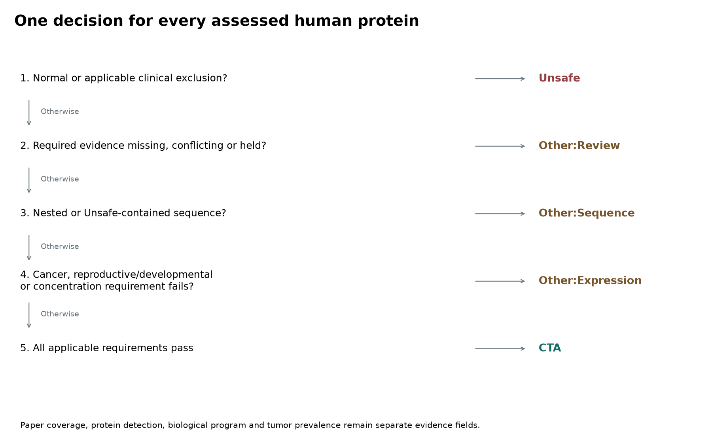
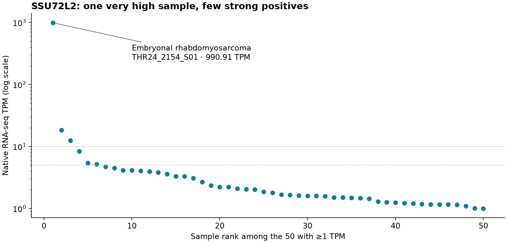
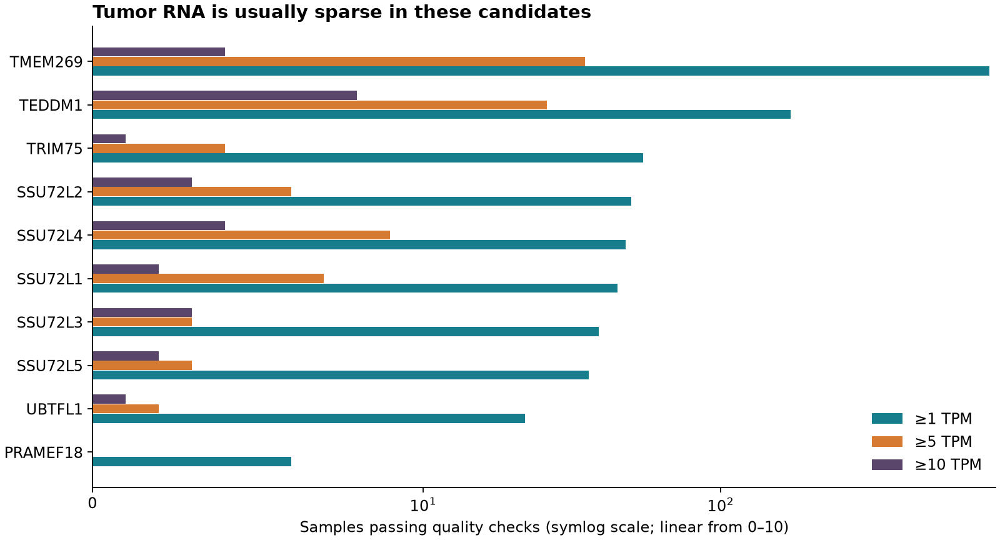

Ten CTA candidates: human normal evidence and tumor prevalence
PRAMEF18 and TRIM75 are Other:Review in the curation replay. TEDDM1, TMEM269, UBTFL1 and SSU72L1–5 are CTA under the existing coding-reference rule. None of the new findings establishes an Unsafe call.
This audit starts from OncoRef 1.35.0 / data 5.23.27. Replaying the existing gates with the eight new curated findings changes 607 CTA / 18,259 Unsafe / 1,027 Other to 600 CTA / 18,259 Unsafe / 1,034 Other. These are proposed decisions, not a published replacement release. The seven category changes are CALHM3, PRAMEF18, TRIM75 and TAF11L11/12/13/14, all Other:Review with normal_evidence_hold status. The ten-protein measurements below are unchanged.
Filterable measurements · Candidate CSV · Every cohort · SSU72L2 positive samples · Top normal contexts · Provenance
One decision flow
Every assessed human protein receives CTA, Other or Unsafe. Other has three subcategories:
| Subcategory |
Reason |
| Other:Review |
Required evidence is missing, conflicting or blocks admission without establishing Unsafe. Includes normal-expression holds, incomplete required coverage and translation/identity problems. |
| Other:Expression |
Cancer presence, reproductive/developmental association or the applicable concentration requirement fails. |
| Other:Sequence |
A nested microprotein lacks independent expression evidence, or at least 95% of its 9-mers occur in Unsafe proteins. |
Unsafe takes precedence over every admission failure. Review takes precedence over Expression or Sequence. Every specific failed gate remains attached to the decision. A paper nomination, experimental protein detection, biological program and tumor prevalence are evidence fields, not additional categories.

The protein decisions cover all 19,893 proteins; the gene decisions retain all 20,099 member loci. These exports include the pending curation above. The API cta_selection.decisions() uses the same categories and subcategories on released evidence; results() retains historical release labels. The machine-readable flow defines the shared vocabulary.
Why SSU72L1–5 are CTA
All five have qualifying annotated coding references, complete approved 194-aa representative translations, supported human embryo expression, cancer RNA and complete required normal-RNA coverage. None has an accepted normal exclusion or review hold. They therefore pass CTA admission. Exact-copy experimental protein detection is unverified; the retained translation rule does not require it for every annotated coding gene. Their selected transcript and protein accessions and every relevant admission result are in the SSU72 admission table.
What the human data say
| Protein |
Normal / reproductive evidence |
Judgment |
| PRAMEF18 |
The vascular-cell paper reports PRAMEF18/19 together. HPA057423 gives intestinal staining but has Uncertain reliability and recognizes more than one gene. Normal bulk and immune RNA are very low. |
Other:Review. Neither low bulk RNA nor a combined antibody/probe result resolves which copy is produced in normal cells. |
| TEDDM1 |
Human epididymal RNA is 562.1 nTPM in the pinned panel, 543.7 in the current HPA response. Cerebellum reaches 3.9 nTPM; Monaco basophils reach 2.0 TPM. UniProt Q5T9Z0 has protein-level evidence, but a tissue-resolved, exact-peptide human MS result was not verified here. |
CTA. Its human reproductive RNA is strong. The early functional experiments were in rodents. |
| TMEM269 |
Human late spermatids reach 105.3 nTPM. Cerebellum reaches 2.8 nTPM and DICE naïve CD4 T cells 2.72 TPM, below their applicable limits. Human embryo mean reaches 5.89 TPM. |
CTA. A liver-cancer paper adds tumor RNA evidence. Membrane prediction does not locate an extracellular domain on tumor cells. |
| TRIM75 |
Human embryo mean reaches 32.64 TPM; normal white matter reaches 0.4 nTPM. A human tear-MS paper lists TRIM75 but merges cancer and control identifications. UniProt A6NK02 has protein-level evidence. |
Other:Review. Resolve the tear sample group and peptide identity before clearing normal restriction. The prior mouse-only description missed this human paper. |
| UBTFL1 |
Human embryo mean reaches 47.19 TPM; adult cortex and HPA plasmacytoid dendritic cells reach 0.4 nTPM. UniProt P0CB47 has protein-level evidence. A purported human-embryo qPCR assay has a primer-identity conflict. |
CTA. The independent human embryo RNA remains usable. |
| SSU72L1 |
Human embryo mean 92.45 TPM; normal panels are mostly zero. An ovarian-cancer RNA perturbation paper reports the previous name SSU72P7. |
CTA. Protein production and unique-read attribution remain unverified. |
| SSU72L2 |
Human embryo mean 318.61 TPM; normal thymus 0.1 nTPM. The 990.91 TPM tumor maximum is one embryonal rhabdomyosarcoma. |
CTA. A large maximum does not imply common expression. |
| SSU72L3 |
Human embryo mean 145.88 TPM; normal thymus 0.1 nTPM and Monaco NK cells 0.3 TPM. |
CTA. Distinguish SSU72L3/SSU72P3 from SSU72 and the other copies. |
| SSU72L4 |
Human embryo mean 260.24 TPM; pinned normal rectum 0.2 nTPM. |
CTA. No exact-copy protein experiment was verified. |
| SSU72L5 |
Human embryo mean 218.66 TPM; normal liver 0.1 nTPM. |
CTA. No exact-copy protein experiment was verified. |
The developmental values are supported lineage means from the pinned human embryo analysis, not single-cell maxima. The Petropoulos human preimplantation atlas establishes a developmental expression program; it is not a tumor-antigen experiment. Native TPM and nTPM are reported separately. The normal-context table retains the top five contexts per source and scope, read support, thresholds and missing values. An unsupported single-cell value is not replaced by zero.
Only PRAMEF18 has an HPA tissue antibody among these ten; the other nine are not assayed, not IHC-negative. HPA's MS field is Not available for all ten. Current UniProt protein-existence evidence is PE1 for TEDDM1, TRIM75 and UBTFL1, and PE3 (homology) for PRAMEF18, TMEM269 and SSU72L1–5. A PE1 annotation does not identify the tissue or prove tumor production. The saved HPA XML and UniProt-derived annotations are date-stamped independently because HPA's imported protein-existence labels lag the retrieved UniProt entries.
Additional normal holds found in PR review
The same rule applies to findings elsewhere in the report:
| Proteins |
Evidence |
Replay decision |
| CALHM3 |
Human taste-bud RNA from laser-captured tissue in three donors; Moyer et al., Figure 10D. The human experiment is distinct from the paper's macaque cell-localization experiments. |
Other:Review pending protein/cell localization. |
| TAF11L11/12/13/14 |
Shared TAF11-like array RT-PCR signal in human whole brain; Tremblay et al., Figure 4. |
Other:Review pending copy attribution. |
The TAF11-like finding covers all 13 represented coding loci in this chromosome 5 array. TAF11L12 receives the same review as the other copies despite having different paper coverage. Previously Other copies remain Other with a review reason; the shared TAF11L5/6/7/8/10 protein remains Unsafe from its existing evidence. A shared RNA assay does not prove that every copy is expressed.
How common is SSU72L2 in tumors?
50 of 14,143 measured, quality-passing sample records have ≥1 TPM (0.354%); six have ≥5 TPM (0.042%); three have ≥10 TPM (0.021%). There are 1,190 values above zero, many below 1 TPM. These thresholds describe prevalence; they are not therapeutic-response thresholds.
| Cancer type |
Sample |
TPM |
Samples ≥5 TPM / measured in cohort |
| Embryonal rhabdomyosarcoma |
THR24_2154_S01 |
990.91 |
1/95 |
| Angiosarcoma |
THR52_4736_S01 |
18.47 |
1/20 |
| Melanoma |
TCGA-D3-A1Q6-06 |
12.49 |
1/469 |
| Large-cell neuroendocrine lung carcinoma |
S00714 |
8.42 |
1/69 |
| Wilms tumor |
TARGET-50-PAJNEC-01A |
5.41 |
1/125 |
| Cervical cancer |
TCGA-JW-A5VH-01 |
5.15 |
1/306 |

All five SSU72-like copies reach their maxima in THR24_2154_S01: SSU72L1 387.74, L2 990.91, L3 362.79, L4 343.51 and L5 413.88 TPM. This is one tumor with a family-wide signal, not five independent confirmations. That sample passes expression QC: 20,958 detected genes, all 30 housekeeping genes above the floor, and its top gene contributes 1.13% of total TPM. These checks do not test whether homologous reads were assigned to the correct copy.
The HPA cancer RNA table also reports SSU72L2: rectal-cancer validation has one of 207 samples ≥5 pTPM (maximum 29.31), lung squamous TCGA one of 489 (7.63), and head-and-neck TCGA two of 492 (6.79). HPA pTPM is kept separate from native TPM. Its TCGA samples overlap the OncoRef collection, so they are not added to the denominator.
Counting and quality rules
All 143 selected cohort matrices were found locally. SSU72L2 is present in 120 matrices and absent from 23; absence of the gene row is missing coverage. The 18,086 SSU72L2 cohort/sample rows become 14,856 source-namespace/sample records after removing known overlapping cohort views. Of these, 713 fail the sample-quality/absolute-TPM checks. One excluded myeloma sample has 1.2589 TPM; this explains the difference between the raw 51/14,856 and qualified 50/14,143 counts. No missing or failed observation becomes a zero.
The counts are sample records, not unique patients. The namespace identifies known shared compendia; cross-study patient identity is not reconstructed. SSU72P2 and SSU72L2 are joined by their exact Ensembl gene ID, not counted as separate proteins. The same rule handles TRIM75P and the other SSU72 aliases. Conflicting values or QC assignments for duplicate records stop the build.
NUTM fails whole-matrix validation because it contains negative or infinite values on a declared TPM scale. It contributes no eligible observations; no clipping or renormalization was used. SSU72L2 also lacks a row in that matrix. The source issue remains open. Array-derived or otherwise unsuitable scales are also excluded from absolute-TPM counts; for example, TEDDM1's raw 40.324 value from MTC is not used. Its qualified maximum is 15.1771 TPM in CLL, matching the released profile.
Tumor measurements for all ten
| Protein |
Measured samples |
≥1 TPM |
≥5 TPM |
≥10 TPM |
Maximum TPM |
Next decision |
| PRAMEF18 |
14,370 |
6 |
0 |
0 |
3.58 |
Other:Review |
| SSU72L1 |
14,143 |
45 |
7 |
2 |
387.74 |
CTA |
| SSU72L2 |
14,143 |
50 |
6 |
3 |
990.91 |
CTA |
| SSU72L3 |
14,143 |
39 |
3 |
3 |
362.79 |
CTA |
| SSU72L4 |
14,143 |
48 |
9 |
4 |
343.51 |
CTA |
| SSU72L5 |
14,143 |
36 |
3 |
2 |
413.88 |
CTA |
| TEDDM1 |
14,381 |
172 |
26 |
8 |
15.18 |
CTA |
| TMEM269 |
2,861 |
802 |
35 |
4 |
22.85 |
CTA |
| TRIM75 |
14,149 |
55 |
4 |
1 |
10.26 |
Other:Review |
| UBTFL1 |
14,381 |
22 |
2 |
1 |
27.00 |
CTA |

TMEM269 has a much smaller measured denominator because many historical matrices lack its gene row. Percentages across candidates therefore describe different measured panels. The cohort table exposes both the denominator and missing coverage.
Papers and their distinct roles
| Source |
Exact finding |
Role in selection |
| Human vascular-cell study, 2019 |
Table 4 lists downregulated PRAMEF18/PRAMEF19 after cocaine and HIV Tat treatment of nonmalignant pulmonary arterial smooth-muscle cultures. This is an mRNA microarray result, not protein detection. |
Normal-expression hold. Combined-copy signal; induced state. The supplied supplement did not resolve its probe sequence. |
| HPA PRAMEF18 tissue and antibody record |
HPA057423 gives medium overall staining with strong intensity in intestinal glandular cells; the summary highlights endocrine cells. Reliability is Uncertain and the antibody recognizes multiple genes. |
Normal-expression hold. This cannot establish exact PRAMEF18 production or supply negative-IHC clearance. |
| Böhm et al., 2012 |
Table II includes TRI75_HUMAN in tear-fluid MS from 25 breast-cancer patients and 25 healthy women. Identifications are combined across the two pools; TRIM75 is not assigned to a group or quantified in Table III. |
Normal-expression hold. Obtain group-specific peptide evidence. The paper is not proof of either healthy TRIM75 or tumor-specific secretion. |
| Shi et al., 2020/2021 |
Supplementary Table S3 includes TMEM269, log2 fold change 1.25759, logCPM −3.45324, FDR 1.69×10⁻⁶ in TCGA liver cancer. |
Cancer RNA support. A TCGA reanalysis, not an independent cohort, CTA nomination or surface-protein experiment. |
| Qi et al., 2021 |
Supplementary Table S2 includes SSU72P7/SSU72L1, 54.92-fold RNA increase after CDCA8 knockdown in A2780 ovarian-cancer cells. |
Cancer-cell RNA context. Perturbation-induced expression, not baseline tumor prevalence or phosphatase-function evidence. |
| Petropoulos et al., 2016 |
Human preimplantation single-cell RNA data, accession E-MTAB-3929. |
Developmental association. OncoRef computes supported lineage means; the paper does not individually nominate these proteins as CTAs. |
| Davies et al., 2007; Yamazaki et al., 2006 |
Epididymal discovery and functional work relevant to TEDDM1/Me9 is principally in rodents. |
Biological context. Human HPA RNA supplies the human reproductive evidence. |
| Zhu et al., 2021 |
Table I's Ubtfl1 primer pair cites XM_021185540.2, a Mus caroli Sod1 transcript. Both primers match mouse Sod1 and neither matches selected human UBTFL1 cDNA. |
Rejected assay attribution. Do not count its reported Ubtfl1 qPCR result as human UBTFL1 support. |
Additional retrieval leads remain separate from accepted evidence. Li et al., 2010 is a human epididymal proteomics catalog relevant to TEDDM1's HEL-S-45e alias, but its exact peptide row was not verified. Hurwitz et al., 2016 is an NCI-60 extracellular-vesicle proteomics source associated with TRIM75 in Vesiclepedia; the primary gene-specific spectra were not verified. Neither lead adds normal-protein clearance, exact tumor-protein credit or surface localization. PeptideAtlas's interactive protein pages blocked automated access; no absence claim is based on that failed retrieval.
The new papers support RNA association, biological context or counterevidence. No retrieved experiment establishes these ten as peptide–HLA targets recognized by T cells or as accessible tumor-surface CAR targets. SSU72 enzyme studies concern SSU72 itself and do not validate SSU72L1–5 enzyme function. Missing experimental protein evidence alone does not overturn the existing coding-reference admission rule.
How normal evidence enters the funnel
The existing Reviewed normal-cell knowledge gate now receives accepted pending curation from gene_knowledge.findings(include_updates=True) in the next selection replay. Each finding retains the gene ID, species, stage, tissue, cell/state, assay, native measurement, source location, limitations and reviewed consequence. The released API defaults to the evidence bound to the released classification; updates are explicitly opt-in until the next release build.
| Evidence |
Consequence |
| Validated adult human protein in Vital/Protected normal cells, or localized normal RNA with orthogonal normal-cell function |
Unsafe evidence. Reproductive association or tumor expression cannot override it. |
| Shared IHC reagent, combined-copy RNA feature, uncertain peptide identity, or unresolved normal/control sample assignment |
Review hold → Other:Review. It blocks CTA admission without asserting established normal production. |
| Measured normal RNA |
Apply the existing tissue/cell-specific thresholds with the assay's native units and support requirements. All supported normal RNA reviewed for these ten remains below its applicable limit. |
| Tumor RNA/protein or reproductive/developmental expression |
Supplies the corresponding presence evidence. It never clears a normal-expression hold. |
| Unassayed IHC, unavailable MS, failed matrix or absent gene row |
Missing evidence, not a negative measurement. Required coverage remains a separate gate. |
| Wrong species, gene copy, transcript or peptide attribution |
No credit for the claimed product; retain the finding and the reason it was rejected. |
For future MS findings, review the actual sample and peptides, their false-discovery control, and uniqueness against the reference including indistinguishable I/L residues. The HPP MS interpretation guidelines use two distinct, uniquely mapping, non-nested peptides of at least nine amino acids for confident MS-based protein-existence claims. This is a review benchmark, not a new blanket requirement replacing OncoRef's coding-reference rule. A database protein name alone cannot resolve a paralog or localize its producing tissue.
Reproduction and files
Run .venv/bin/python scripts/build_cta_candidate_evidence.py to rebuild tables, figures, the filterable page and the curation replay from the committed inputs. scripts/collect_cta_candidate_tumors.py re-extracts the ten loci and sample QC from the pinned source matrices; it verifies their full-file hashes. Source matrices are listed by release asset and SHA-256 in matrix provenance.
The current HPA RNA extraction is separate from the frozen selection inputs. Each candidate's compressed original HPA XML is retained under inputs/. The primer-check receipt, selected human cDNA and cited accession are also retained. The curation replay first reproduces every released classification from the stored gates, then adds the eight accepted new findings. Unsafe membership must remain unchanged before reusing its sequence-containment values.